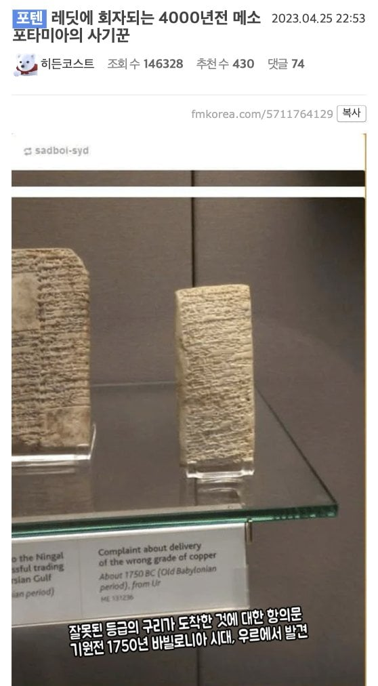
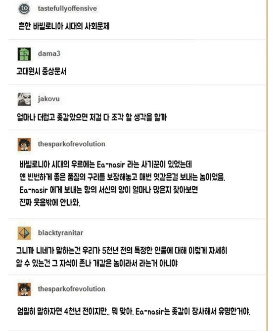
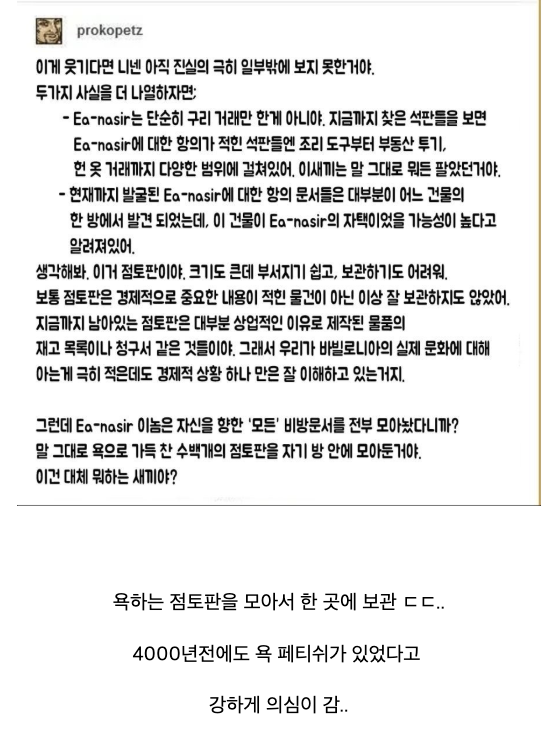

저 점토판이 좋은상태로 발견된건
불에 아주 잘 구워졌기 때문이다..
집으로 추정되는 공간과 함께..
그리고 그 점토판의 주인도 아마도 같이..
집이 아니라 가마솥으로 용도 변경 된거군
점토판이니깐 조각한게 아니라 진흙에다 새긴거 아닌가
맞음 그래서 도시가 공격당하고 불탈때 보존된애들많음
지금은 돌땡이같으니 보이는대로 말한듯
맞아
지금생각하니까 저거 ea-nasir가 개인이 아닌거아님?
어떤 상인집단이거나 어쩌면 관공서에 가까운 무언가였다거나
그러니까 저긴 민원실 서류창고였던거...
실제 있었던 사람은 맞음
고객 중에 Nanni라는 사람이 불평해서 "맘에 들면 가져가고 맘에 안 들면 꺼져라"라고 답변한 기록도 있음
당신의 민원이 배달완료되었습니다. ea nasir는 당신의 목소리를 중요하게 생각합니다. 감사합니다.
ea-nasir를 조사하는 수사기관이었을수도 있을 것 같음
오 법원같은거에 악덕상인 증거 잔뜩모인 ㅋㅋ
ea-nasir 김미영팀장
이걸 수천년전 "박제"라고 부르기로 했어요
걍 공기관이 민원 같은 이름의 사람꺼 모았놨다고 하는게 합리적이지 않음? ㅋㅋㅋㅋ
4000년전 메소사기꾼 ㄷㄷㄷ
4000년전의 천하의 개상놈새끼 ㅋㅋㅋㅋㅋㅋㅋ
하도 황당한 내용의 비슷한 점토가 한집에서 출토되어서
처음에 번역방식에 심각한 찐빠가 있는게 아닌가 하고 학계에서 엄청 당황했다함 ㅋㅋㅋ
내 생각엔 욕패티쉬라기보단 누구한테 사기쳤는지 관리하려고 보관해둔듯
바닥이 좁으니 보복당할 가능성도 컸을테고
찾아보니까. 좀 재미없는 결론이긴 하네.
1. 쟤가 유명한 상인이고, 점토판이 쟤 집에서 발견된건 맞음.
2. 하지만 발견 당시 집의 이 곳 저곳 ( 폐기물, 벽 충전재 ) 등에서 나옴. 조선 시대에 벽지 바른다고 서간이나 책 뜯어서 바른거랑 비슷함.
3. 생전에는 저택이었지만, 사후에 분할 매각 하거나 거주 하면서 그 과정에서 폐기된 점토판이 섞여들어간듯.
4. 하지만 인터넷에서는 `역사에 남은 트롤러` 인게 더 조아쓰!!
극한의 쌀먹 '메소'포타미아인 ㄷㄷ
그 이전에 저 시대에도 부동산 투기가 있었구나 ㄷ
?? : ptsd 땄다